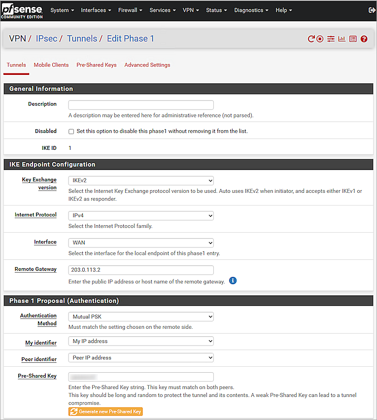
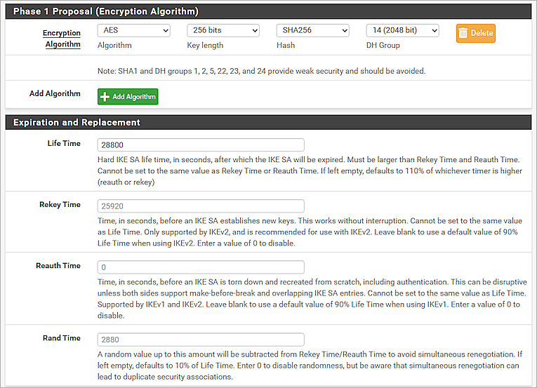
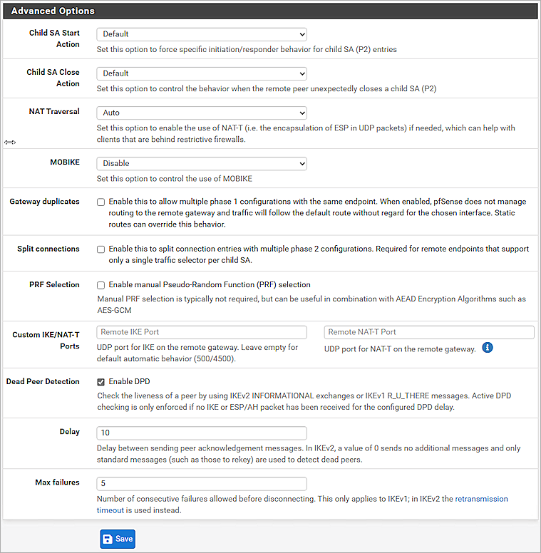
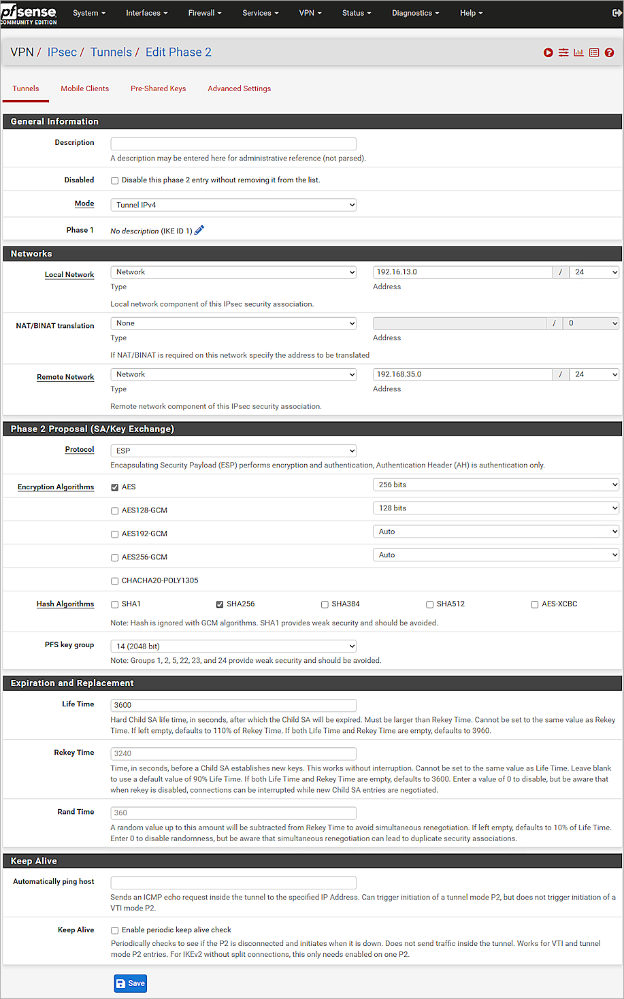
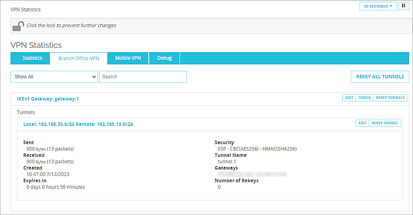

Contents
Deployment Overview
WatchGuard provides integration instructions to help our customers configure WatchGuard products to work with products created by other organizations. If you need more information or technical support about how to configure a third-party product, go to the documentation and support resources for that product.
This integration guide describes how to configure a Branch Office VPN (BOVPN) between a WatchGuard Firebox and a pfSense device.
Integration Summary
The hardware and software used in this guide include:
- WatchGuard Firebox with Fireware v12.10
- pfSense device with v2.7.0-RELEASE (amd64)
Integration Topology
This diagram outlines the topology used in this integration.

Configure the Firebox
On the Firebox, configure a Branch Office VPN (BOVPN) connection:
- Log in to Fireware Web UI.
- Select VPN > Branch Office VPN.
The Branch Office VPN configuration page opens. - In the Gateways section, click Add.
- In the Gateway Name text box, type a name to identify this BOVPN gateway.
- From the Address Family drop-down list, select IPv4 Addresses.
- In the Credential Method section, select Use Pre-Shared Key. Type the pre-shared key.

- In the Gateway Endpoint section, click Add.
The Gateway Endpoint Settings dialog box opens. - From the External Interface drop-down list, select External.
- From the Interface IP Address drop-down list, select Primary Interface IPv4 Address.
The Primary Interface IP Address is the primary IP address you configured on the selected external interface. - Select By IP Address. Type the primary IP address of the external Firebox interface.

- Select the Remote Gateway tab.
- Select Static IP Address. Type the IP address of your pfSense WAN connection.
- Select By IP Address. Type the IP address of your pfSense WAN connection.
- Keep the default values for all other settings.

- Click OK.
- In the Gateway Endpoint section, select the Start Phase 1 tunnel when Firebox starts check box.

- Select the Phase 1 Settings tab.
- From the Version drop-down list, select IKEv2.
- Keep the default values for all of the Phase 1 Settings.

- Click Save.
- In the Tunnels section, click Add.

- From the Gateway drop-down list, select the gateway that you configured.
- In the Addresses section, click Add.

- In the Local IP section, from the Choose Type drop-down list, select Network IPv4.
- In the Network IP text box, type the local IP segment. This is the local network protected by the Firebox.
- In the Remote IP section, from the Choose Type drop-down list, select Network IPv4.
- In the Network IP text box, type the remote IP segment. This is the local network protected by pfSense.

- Click OK.
- Keep the default values for all of the Phase 2 Settings.

- Click Save.
Configure pfSense
Configure Basic Settings
- Log in to the pfSense Web UI at: https://<IP address of the pfSense>
The default IP address of the interface is: https://192.168.1.1 - Configure the pfSense interfaces.
For information about how to configure interfaces, go to the pfSense documentation.


Configure the pfSense IPSec VPN Phase 1 Settings
- Select VPN > IPsec > Tunnels.
- Click + Add P1.
- In the IKE Endpoint Configuration section, from the Key Exchange version drop-down list, select IKEv2.
- From the Internet Protocol drop-down list, select IPv4.
- From the Interface drop-down list, select WAN.
- In the Remote Gateway text box, type the IP address of the remote gateway.
- In the Phase 1 Proposal (Authentication) section, from the Authentication Method drop-down list, select Mutual PSK.
- From the My identifier drop-down list, select My IP address.
- From the Peer identifier drop-down list, select Peer IP address.
- In the Pre-Shared Key text box, type the pre-shared key.
- In the Phase 1 Proposal (Encryption Algorithm) section, from the Algorithm drop-down list, select AES.
- From the Key length drop-down list, select 256 bits.
- From the Hash drop-down list, select SHA256.
- From the DH Group drop-down list, select 14 (2048 bit).
- In the Life Time text box, type 28800.


- Keep the default values for all other settings.

- Click Save.

Configure the pfSense IPSec VPN Phase 2 Settings
- Click Show Phase 2 Entries (0).
- Click + Add P2.
- In the General Information section, from the Mode drop-down list, select Tunnel IPv4.
- For Local Network, from the Type drop-down list, select Network.
- In the Address text box, type the local network IP address.
- For Remote Network, from the Type drop-down list, select Network.
- In the Address text box, type the remote network IP address.
- In the Phase 2 Proposal (SA/Key Exchange) section, from the Protocol drop-down list, select ESP.
- For Encryption Algorithms, select AES. In the adjacent drop-down list, select 256 bits.
- For Hash Algorithms, select the SHA256 check box.
- From the PFS key group drop-down list, select 14 (2048 bit).
- In the Life Time text box, type 3600.

- Click Save.

- Click Apply Changes.
Configure Rule Settings
- Select Firewall > Rules > IPsec.
- Click Add.
- From the Action drop-down list, select Pass.
- From the Protocol drop-down list, select Any.
- From the Source drop-down list, select Network.
- In the Source Address text box, type the remote network IP address.
- From the Destination drop-down list, select Network.
- In the Destination Address text box, type the local network IP address.
- Keep the default values for all other settings.

- Click Save.
- (Optional) Repeat steps 2-10 to create another rule.

- Click Apply Changes.
Test the Integration
To test the integration, from Fireware Web UI:
- Select System Status > VPN Statistics.
- Select the Branch Office VPN tab.
- Verify that the VPN is established.

- Verify that Host 1 (behind the Firebox) and Host 2 (behind the pfSense) can successfully ping each other.